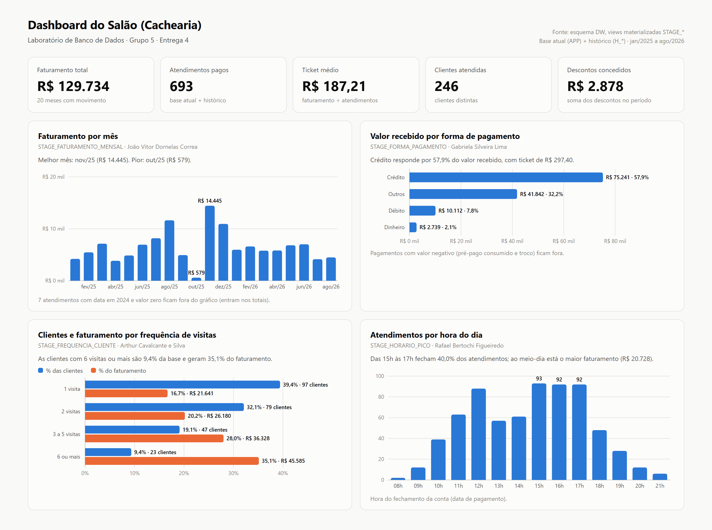
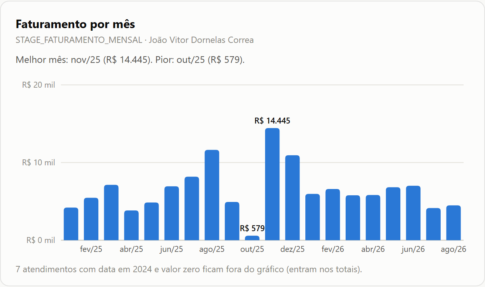
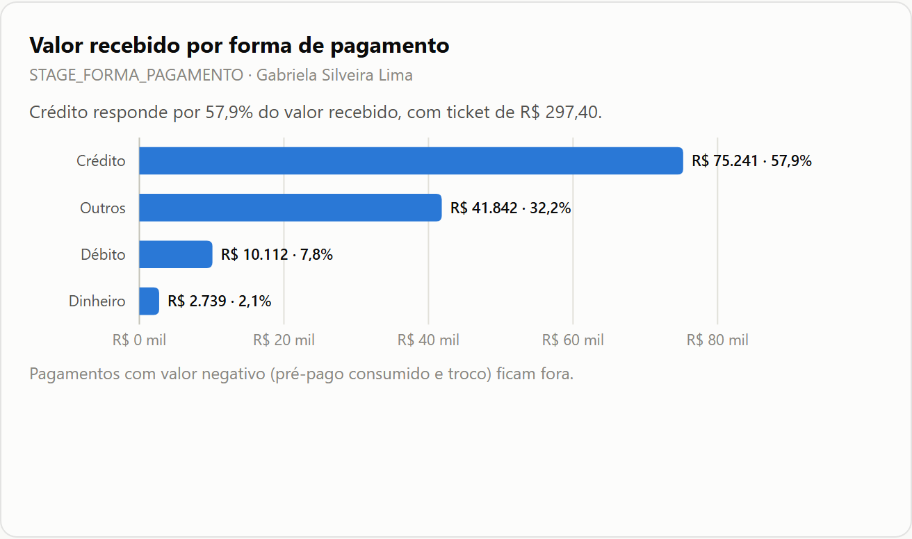
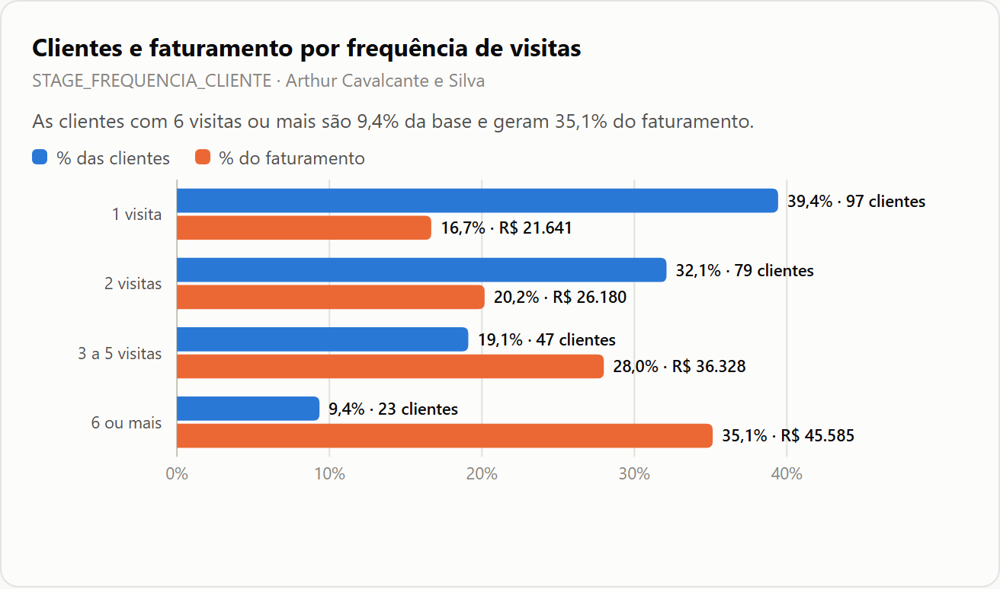
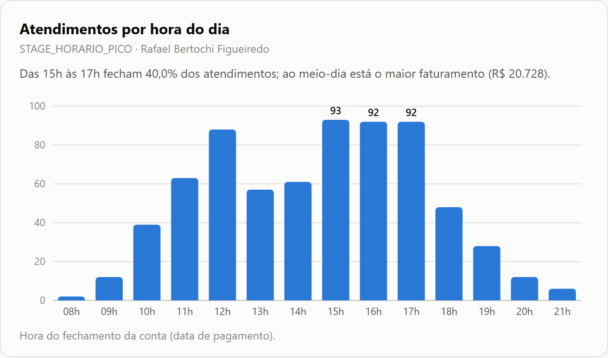

Projeto de banco de dados: da fonte de dados ao BI
Entrega 4 · Documento do projeto Novembro de 2026
Integrantes
Arthur Cavalcante e Silva Gabriela Silveira Lima João Vitor Dornelas Correa Rafael Bertochi Figueiredo
Sumário
Fonte de dados inicial
Modelo relacional
Mecanismo de historiamento
Auditoria
Arquitetura: esquemas segmentados para auditoria e BI
Entrega 4: esquema DW e stages
Dashboards
Documento assinado da entrega do projeto
Foto (evidência da entrega)
Resumo do projeto
O projeto modela o banco de dados de um salão de beleza especializado em cabelo cacheado, a partir de um relatório real exportado do sistema de gestão do salão. Ao longo das entregas, o grupo normalizou a fonte de dados, criou o esquema relacional em Oracle, carregou os três períodos de dados, implementou o historiamento e a auditoria das alterações e, nesta entrega, criou um esquema separado de BI (DW) com stages que alimentam os dashboards.
Entrega
Conteúdo
1
Fonte de dados, modelo relacional, dicionário de dados e carga do 1º período (jan a ago/2025)
2
Carga do 2º período (set/2025 a fev/2026), views analíticas e consultas estratégicas
3
Carga do 3º período (mar a ago/2026), esquemas APP e APP_AUDIT, historiamento e auditoria
4
Esquema DW, views dinâmicas e materializadas (stages), consultas estratégicas sobre as stages e dashboards
Scripts do repositório (ordem de execução)
Script
Conectado como
O que faz
01_usuarios.sql
SYS
Cria os usuários APP e APP_AUDIT
02_app.sql
APP
Tabelas, sequences, chaves, tabelas de histórico H_* e triggers
03_app_audit.sql
APP_AUDIT
Tabela AUDITORIA, procedure e triggers de auditoria
04_dados.sql
APP
Carga dos dados dos três períodos
05_historico.sql
APP
Move os atendimentos até jul/2026 para o histórico
06_dw.sql
SYS
Cria o usuário DW e dá leitura nas tabelas do APP
07 a 10_stage_*.sql
DW
Uma stage por integrante: view dinâmica, view materializada e consulta
1Fonte de dados inicial
A fonte é um relatório real exportado do sistema de gestão do salão (relatorio.csv), cobrindo o período de 04/01/2025 a 30/08/2026.
O arquivo trazia os problemas típicos de um relatório exportado direto do sistema: codificação Latin-1, separador ponto e vírgula, números no formato brasileiro (1.234,56) e, principalmente, duas tabelas diferentes no mesmo arquivo: os atendimentos e vendas (serviço, produto, pacote, vale-presente, desconto, formas de pagamento, gorjeta) e o fechamento diário de caixa.
Depois de separar as duas tabelas e limpar os dados, a fonte foi organizada em uma planilha (fonte_de_dados.xlsx) com uma aba por tabela, já normalizada até a 3FN. Para simular a chegada de dados novos ao longo do semestre, a base foi dividida em três planilhas, uma por entrega:
Tabela (aba)
Conteúdo
Base completa
Entrega 1 jan–ago/25
Entrega 2 set/25–fev/26
Entrega 3 mar–ago/26
CLIENTE
Clientes atendidas
246
137
98
88
FUNCIONARIO
Quem fechou a conta
3
3
1
1
MOTIVO_DESCONTO
Motivos de desconto
4
3
2
3
FORMA_PAGAMENTO
Formas de pagamento
7
5
5
6
ATENDIMENTO
Atendimentos e vendas
693
297
200
189
PAGAMENTO_ATENDIMENTO
Valor pago por forma de pagamento
887
378
267
242
CAIXA_DIARIO
Fechamento diário do caixa
234
107
61
66
As tabelas de apoio (clientes, funcionários, motivos e formas de pagamento) aparecem em mais de um período, por isso a soma das colunas por entrega é maior que a base completa nessas linhas.
Registros com data fora do período. Sete atendimentos (ids 83 a 89) estão com a data registrada em 2024, fora do período do projeto e fora da sequência cronológica (o id 82 é de 22/03/2025 e o id 90 é de 25/03/2025). Tudo indica um erro de digitação do ano no sistema de origem. Eles ficaram fora das três planilhas por entrega (297 + 200 + 189 = 686 atendimentos), mas estão na carga completa do banco (693), todos com valor zero. Nos dashboards eles entram nos totais e ficam fora do gráfico mensal.
Principais transformações
Problema na fonte
Tratamento
Atendimentos e caixa diário no mesmo arquivo
Separados em ATENDIMENTO e CAIXA_DIARIO, que têm granularidades diferentes (por atendimento × por dia)
Uma coluna de valor para cada forma de pagamento na mesma linha (grupo repetitivo)
Transformadas em linhas da tabela PAGAMENTO_ATENDIMENTO (1FN)
Nome de quem fechou a conta e motivo do desconto repetidos em texto
Movidos para FUNCIONARIO e MOTIVO_DESCONTO, referenciados por FK (3FN)
Números no formato 1.234,56 e encoding Latin-1
Convertidos para número decimal e UTF-8 na carga
2Modelo relacional
O modelo tem sete tabelas operacionais no esquema APP. Na entrega 3, os nomes das colunas passaram a usar o prefixo de cada tabela (por exemplo, ATD_ para ATENDIMENTO e CLI_ para CLIENTE). Também foram criadas as tabelas de histórico H_*.
Relacionamentos
Relacionamento
Cardinalidade
Regra
CLIENTE → ATENDIMENTO
1 : N
FK obrigatória FK_ATD_CLI
FUNCIONARIO → ATENDIMENTO
1 : N
FK obrigatória FK_ATD_FUN
MOTIVO_DESCONTO → ATENDIMENTO
0..1 : N
FK opcional FK_ATD_MTD (a maioria dos atendimentos não tem desconto)
FORMA_PAGAMENTO → PAGAMENTO_ATENDIMENTO
1 : N
FK obrigatória FK_PGA_FPG
ATENDIMENTO → PAGAMENTO_ATENDIMENTO
1 : N
Ligação lógica: sem FK física, para que um atendimento possa ir para o histórico sem apagar os pagamentos
CAIXA_DIARIO não tem FK: é um fechamento por dia, com granularidade diferente dos atendimentos. O modelo original da entrega 1 e o dicionário de dados estão no repositório (modelo_relacional (1).pdf e dicionario_de_dados (1).docx).
3Mecanismo de historiamento
Toda alteração ou exclusão nas tabelas do APP guarda a versão anterior do registro numa tabela de histórico, com a data e hora em que ela saiu da tabela atual.
Como funciona
Elemento
Descrição
Tabelas H_*
Uma por tabela operacional (7 no total), com as mesmas colunas e o prefixo H (ex.: HATD_), mais a coluna *_DT_ENTRADA
Chave primária
Id original + data de entrada. Um mesmo registro pode ter várias versões no histórico
Triggers TG_H*
BEFORE UPDATE OR DELETE ... FOR EACH ROW: copiam os valores :OLD para a tabela H_ com SYSDATE
Triggers TG_SEQ_*
Geram o id das novas linhas pelas sequences (ficam desligados durante a carga para manter os ids da fonte)
CREATE OR REPLACE TRIGGER "APP"."TG_HATD" BEFORE
UPDATE OR DELETE ON atendimento
FOR EACH ROW
BEGIN
insert into h_atendimento values (:old.atd_id, :old.atd_dt_atendimento, :old.atd_dt_pagamento, :old.atd_tipo,
:old.atd_cli_id, :old.atd_fun_id, :old.atd_total_servico, :old.atd_qtd_servico,
... demais colunas ...,
:old.atd_comentario_fechamento, :old.atd_comentario_estorno, sysdate);
END;
Aplicação no projeto
O script 05_historico.sql exclui da tabela ATENDIMENTO os atendimentos anteriores a agosto de 2026. O trigger TG_HATD copia cada linha excluída para H_ATENDIMENTO. Assim a tabela atual fica só com o mês corrente e todo o passado continua disponível no histórico:
Tabela
Registros após o 05_historico.sql
APP.ATENDIMENTO (ago/2026)
27
APP.H_ATENDIMENTO (jan/2024 a jul/2026)
666
Total (igual à carga)
693
Teste
Um UPDATE no atendimento 665 gerou na hora uma linha em H_ATENDIMENTO com o valor anterior (R$ 50,00) e a data de entrada. O teste foi desfeito com ROLLBACK.
Uso no BI. Como o passado está no histórico, as stages do DW juntam as duas tabelas: ATENDIMENTO UNION ALL H_ATENDIMENTO. Do histórico entra só a versão mais recente (ROW_NUMBER() OVER (PARTITION BY id ORDER BY dt_entrada DESC) = 1) de cada registro que não existe mais na tabela atual.
4Auditoria
As tabelas de histórico são a memória do sistema, então qualquer alteração nelas precisa deixar rastro. A auditoria fica num esquema separado, APP_AUDIT, que o usuário da aplicação não consegue ler nem alterar.
Componentes
Objeto
Função
APP_AUDIT.AUDITORIA
Uma linha por coluna alterada: tabela, coluna, valor antigo, valor novo, tipo de operação (U/D), data, usuário do banco e usuário do sistema operacional
APP_AUDIT.PR_INSERE_AUDITORIA
Procedure que grava o registro de auditoria
APP_AUDIT.TG_AUD_H* (7 triggers)
Disparam em UPDATE ou DELETE nas tabelas APP.H_*. No DELETE gravam o valor de todas as colunas; no UPDATE, só das colunas que mudaram
SEQ_AUD / TG_SEQ_AUD
Geram o AUD_ID
Coluna
Tipo
Conteúdo
AUD_ID
NUMBER(10)
Identificador
AUD_TABELA
VARCHAR2(30)
Tabela de histórico alterada
AUD_COLUNA
VARCHAR2(30)
Coluna alterada
AUD_VALOR_ANTIGO / AUD_VALOR_NOVO
VARCHAR2(100)
Valor antes e depois (novo = nulo em exclusões)
AUD_TP_OPERACAO
CHAR(1)
U = update, D = delete
AUD_DATA_ENTRADA
DATE
Quando a alteração aconteceu
AUD_BD_USER / AUD_SO_USER
VARCHAR2(255)
Usuário do banco (USER) e do sistema operacional (SYS_CONTEXT('USERENV','OS_USER'))
Teste
Uma alteração direta no histórico (atendimento 1) foi registrada na auditoria com o valor antigo, o novo e os dois usuários. O teste foi desfeito com ROLLBACK, e a tabela voltou a ficar vazia.
SQL> update app.h_atendimento set hatd_total_geral = hatd_total_geral + 5 where hatd_id = 1;
1 row updated.
AUD_ID AUD_TABELA AUD_COLUNA VALOR_ANTIGO VALOR_NOVO OP DATA BD_USER SO_USER
------ -------------- ----------------- ------------ ---------- -- ----------------- ------- -------
2 H_ATENDIMENTO HATD_TOTAL_GERAL 0 5 U 24/11/2026 18:13 SYS oracle
Conectado como APP, a mesma consulta à tabela de auditoria retorna ORA-00942: table or view "APP_AUDIT"."AUDITORIA" does not exist. A aplicação não enxerga a própria trilha de auditoria.
5Arquitetura: esquemas segmentados para auditoria e BI
O banco foi dividido em três esquemas, cada um com uma responsabilidade e com permissões mínimas: a aplicação grava no APP, a auditoria fica isolada no APP_AUDIT e o BI só lê, a partir do DW.
Responsabilidade e permissões de cada esquema
Esquema
Papel
Permissões
APP
Dados da aplicação e histórico
CONNECT, RESOURCE. Dono das tabelas operacionais e H_*
APP_AUDIT
Trilha de auditoria das tabelas de histórico
CONNECT, RESOURCE, CREATE ANY TRIGGER (para criar triggers sobre tabelas do APP). Nenhum outro esquema recebe acesso à AUDITORIA
DW
Camada de BI: stages para relatórios e dashboards
CONNECT, RESOURCE, CREATE VIEW, CREATE MATERIALIZED VIEW e só SELECT nas tabelas do APP (atuais e H_*). Não grava nada no APP
Por que separar
Segurança: um erro ou acesso indevido pelo usuário da aplicação não consegue apagar a auditoria, e o BI não consegue alterar os dados de produção.
Desempenho: os dashboards leem as views materializadas do DW, que já guardam o resultado agregado. As consultas pesadas não concorrem com a operação do salão. A atualização é feita sob demanda (REFRESH FORCE ON DEMAND).
Organização: cada esquema tem um dono e um script de criação, o que facilita manutenção e entrega.
6Entrega 4: esquema DW e stages
Cada integrante criou uma stage no DW, com três partes: uma view dinâmica (VW_STAGE_*), uma view materializada com a mesma lógica (STAGE_*) e uma consulta estratégica sobre a stage.
Integrante
Stage
Pergunta de negócio
Script
João Vitor Dornelas Correa
STAGE_FATURAMENTO_MENSAL
Como o faturamento, o ticket médio e os descontos evoluem mês a mês?
07_stage_faturamento_mensal.sql
Gabriela Silveira Lima
STAGE_FORMA_PAGAMENTO
Quanto do valor recebido vem de cada forma de pagamento?
08_stage_forma_pagamento.sql
Arthur Cavalcante e Silva
STAGE_FREQUENCIA_CLIENTE
Quanto do faturamento depende de clientes que voltam?
09_stage_frequencia_cliente.sql
Rafael Bertochi Figueiredo
STAGE_HORARIO_PICO
Em que horários o salão mais atende e mais fatura?
10_stage_horario_pico.sql
4A · Criação do usuário DW
4A. Script 06_dw.sql executado como SYS: criação do usuário DW, privilégios de view e view materializada e SELECT nas tabelas do APP.
João. Faturamento mensal: o melhor mês foi nov/2025 (R$ 14.445) e o pior, out/2025 (R$ 579).Gabriela. O cartão de crédito responde por 57,9% do valor recebido, com o maior valor médio (R$ 297,40).Arthur. As clientes com 6 visitas ou mais são 9,4% da base e geram 35,1% do faturamento.Rafael. Das 15h às 17h fecham 40% dos atendimentos, e o meio-dia tem o maior faturamento por hora.
7Dashboards
O dashboard lê as quatro stages do DW e mostra os indicadores gerais e um painel por integrante. Ele é gerado pelo script dashboards/gerar_dashboard.py a partir das stages exportadas e fica em dashboards/dashboard.html.

Dashboard completo. Faturamento total de R$ 129.734 em 693 atendimentos pagos, ticket médio de R$ 187,21 e 246 clientes atendidas.

João. Faturamento por mês

Gabriela. Valor por forma de pagamento

Arthur. Clientes e faturamento por frequência

Rafael. Atendimentos por hora do dia
Principais conclusões
Sazonalidade: o faturamento tem pico em nov/2025 e queda forte em out/2025. Vale planejar campanhas para os meses fracos.
Pagamentos: crédito e "Outros" somam 90% do valor recebido. O dinheiro em espécie é residual (2,1%).
Fidelização: 28% das clientes (3 visitas ou mais) geram 63% do faturamento. Programas de retorno e pacotes têm alto impacto.
Agenda: a tarde (15h a 17h) concentra o movimento. O começo da manhã e a noite ficam ociosos e podem receber promoções ou serviços longos.
8Documento assinado da entrega do projeto
Termo de Entrega do Projeto
Laboratório de Banco de Dados · Grupo 5
Nós, integrantes do Grupo 5, declaramos que entregamos o projeto Sistema de Gestão de Salão (Cachearia), composto por:
Fonte de dados inicial e sua normalização;
Modelo relacional e dicionário de dados;
Scripts de criação e carga do banco (esquemas APP, APP_AUDIT e DW);
Mecanismo de historiamento e auditoria;
Stages de BI (views dinâmicas e materializadas), consultas estratégicas e dashboards;
Este documento do projeto.
Os arquivos estão no repositório github.com/rafaelbertochi1/Lab_Banco_Dados.
Local e data: ______________________________, ____ / ____ / ________
Arthur Cavalcante e SilvaAssinatura
Gabriela Silveira LimaAssinatura
João Vitor Dornelas CorreaAssinatura
Rafael Bertochi FigueiredoAssinatura
Professor(a) responsávelAssinatura de recebimento
9Foto (evidência da entrega)
Foto do grupo no momento da entrega do projeto.
Inserir aqui a foto da entrega (salve a foto como documentacao/foto_entrega.jpg e rode gerar_documento.py)